CST-A-001 · KF01 → KF02
Opening Sheet → Sheet Rises
FLF → KF02
First-frame upload keyframes/CST-KF01-opening-sheet.png
Last-frame upload keyframes/CST-KF02-sheet-rises.png
Accepted filename accepted/CST-A-001.mp4
Seed 270711
Positive prompt
Copy prompt
CST-A-002 · KF02 → KF03
Sheet Rises → Sheet Portal
FLF → KF03
Storyboard start · KF02
→
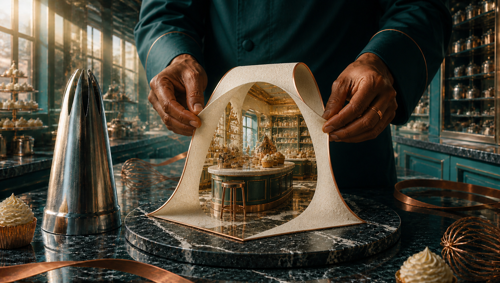
QA target · upload as last frame · KF03
First-frame upload keyframes/CST-KF02-sheet-rises.png
Last-frame upload keyframes/CST-KF03-sheet-portal.png
Accepted filename accepted/CST-A-002.mp4
Seed 270711
Positive prompt
Copy prompt
CST-A-003 · KF03 → KF04
Sheet Portal → Portal Folds To Cake
FLF → KF04
Storyboard start · KF03
→
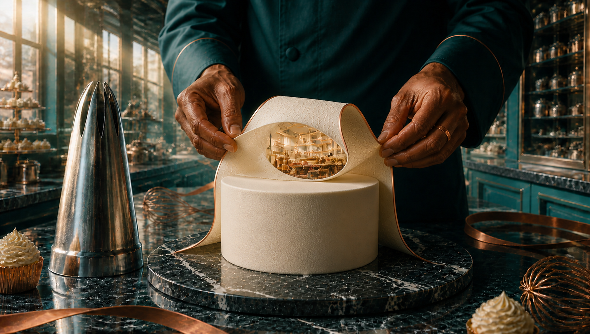
QA target · upload as last frame · KF04
First-frame upload keyframes/CST-KF03-sheet-portal.png
Last-frame upload keyframes/CST-KF04-portal-folds-to-cake.png
Accepted filename accepted/CST-A-003.mp4
Seed 270711
Positive prompt
Copy prompt
CST-A-004 · KF04 → KF05
Portal Folds To Cake → Blank Cake
FLF → KF05
Storyboard start · KF04
→
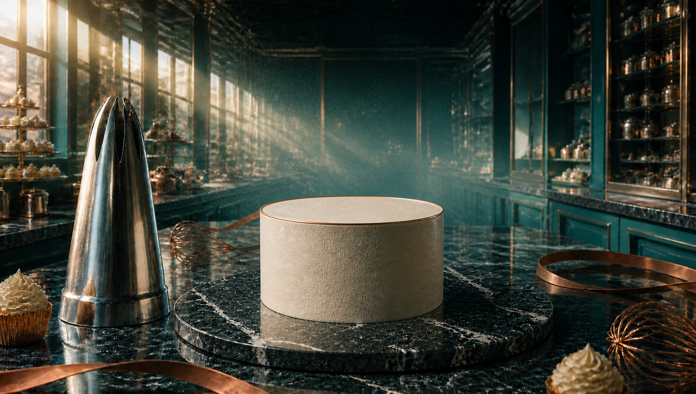
QA target · upload as last frame · KF05
First-frame upload keyframes/CST-KF04-portal-folds-to-cake.png
Last-frame upload keyframes/CST-KF05-blank-cake.png
Accepted filename accepted/CST-A-004.mp4
Seed 270711
Positive prompt
Copy prompt
CST-A-005 · KF05 → KF06
Blank Cake → Piping Stair Begins
FLF → KF06
Storyboard start · KF05
→
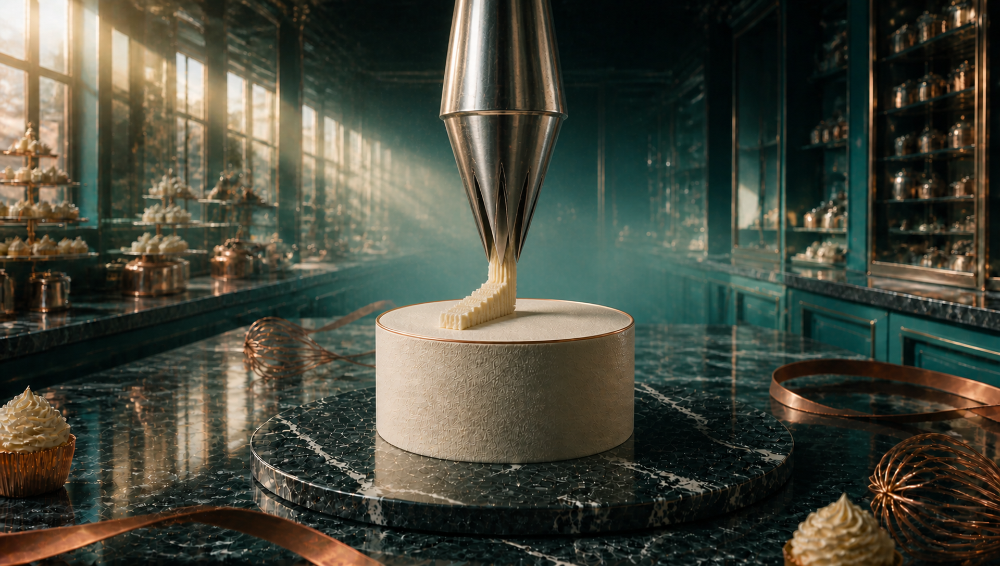
QA target · upload as last frame · KF06
First-frame upload keyframes/CST-KF05-blank-cake.png
Last-frame upload keyframes/CST-KF06-piping-stair-begins.png
Accepted filename accepted/CST-A-005.mp4
Seed 270711
Positive prompt
Copy prompt
CST-A-006 · KF06 → KF07
Piping Stair Begins → Escher Atrium
FLF → KF07
Storyboard start · KF06
→
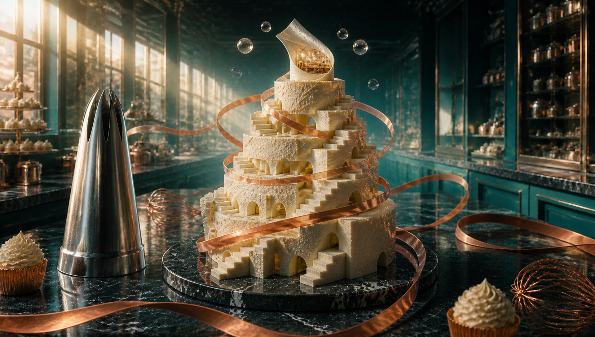
QA target · upload as last frame · KF07
First-frame upload keyframes/CST-KF06-piping-stair-begins.png
Last-frame upload keyframes/CST-KF07-escher-atrium.png
Accepted filename accepted/CST-A-006.mp4
Seed 270711
Positive prompt
Copy prompt
CST-A-007 · KF07 → KF08
Escher Atrium → Product Berry
FLF → KF08
Storyboard start · KF07
→
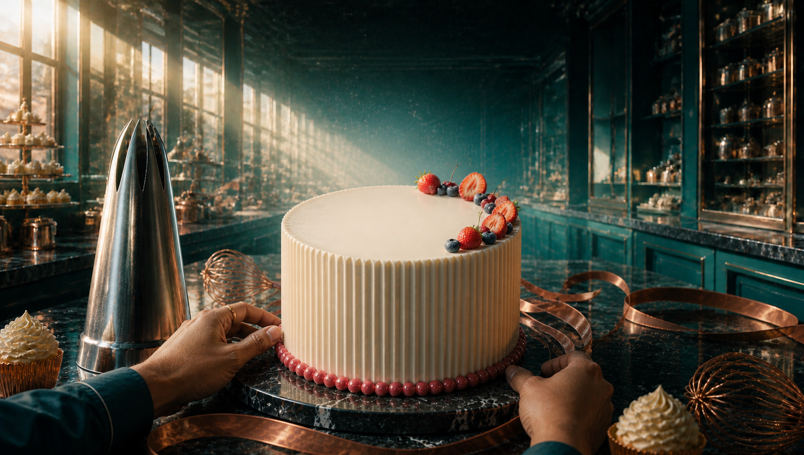
QA target · upload as last frame · KF08
First-frame upload keyframes/CST-KF07-escher-atrium.png
Last-frame upload keyframes/CST-KF08-product-berry.png
Accepted filename accepted/CST-A-007.mp4
Seed 270711
Positive prompt
Copy prompt
CST-A-008 · KF08 → KF09
Product Berry → Product Chocolate Round
FLF → KF09
Storyboard start · KF08
→
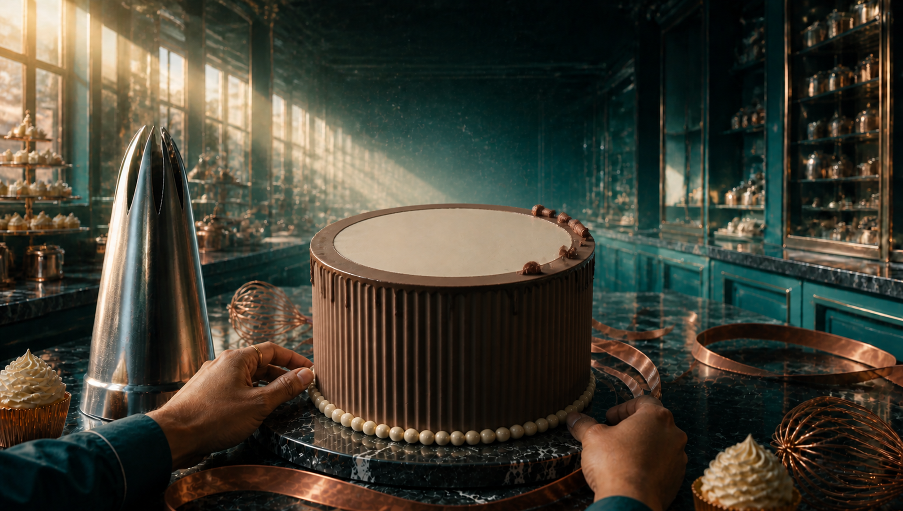
QA target · upload as last frame · KF09
First-frame upload keyframes/CST-KF08-product-berry.png
Last-frame upload keyframes/CST-KF09-product-chocolate-round.png
Accepted filename accepted/CST-A-008.mp4
Seed 270712
Positive prompt
Copy prompt
CST-A-009 · KF09 → KF10
Product Chocolate Round → Product Chocolate Sheet
FLF → KF10
Storyboard start · KF09
→
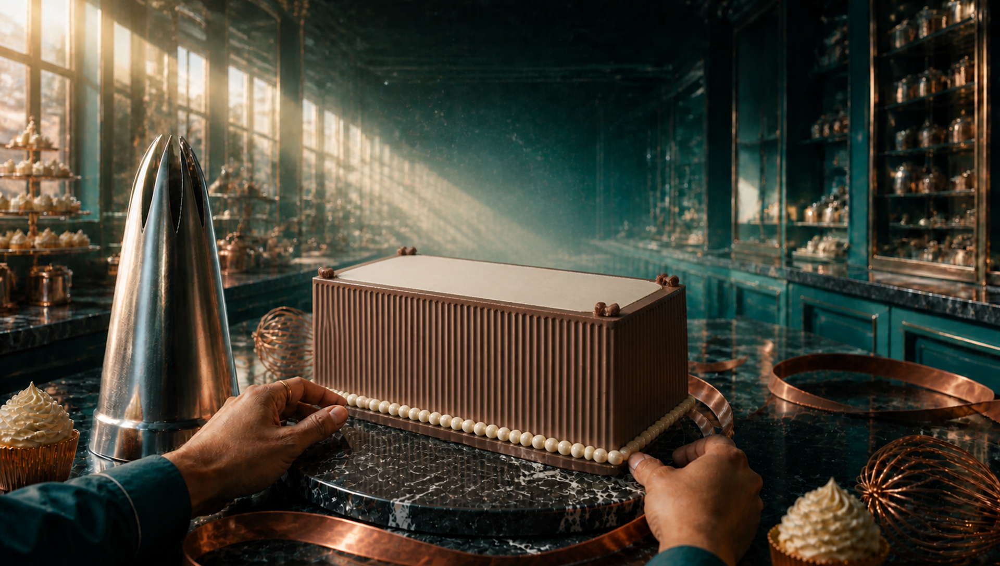
QA target · upload as last frame · KF10
First-frame upload keyframes/CST-KF09-product-chocolate-round.png
Last-frame upload keyframes/CST-KF10-product-chocolate-sheet.png
Accepted filename accepted/CST-A-009.mp4
Seed 270712
Positive prompt
Copy prompt
CST-A-010 · KF10 → KF11
Product Chocolate Sheet → Product Heart
FLF → KF11
Storyboard start · KF10
→
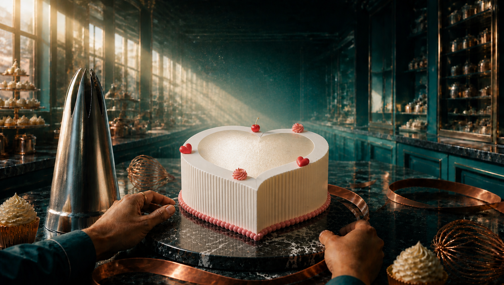
QA target · upload as last frame · KF11
First-frame upload keyframes/CST-KF10-product-chocolate-sheet.png
Last-frame upload keyframes/CST-KF11-product-heart.png
Accepted filename accepted/CST-A-010.mp4
Seed 270712
Positive prompt
Copy prompt
CST-A-011 · KF11 → KF12
Product Heart → Product Oval
FLF → KF12
Storyboard start · KF11
→
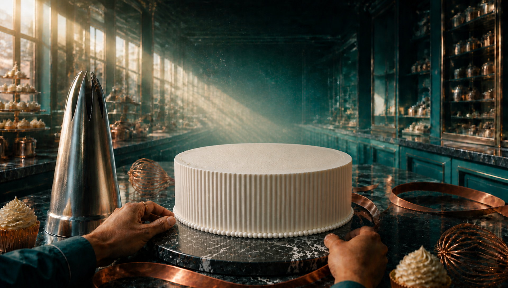
QA target · upload as last frame · KF12
First-frame upload keyframes/CST-KF11-product-heart.png
Last-frame upload keyframes/CST-KF12-product-oval.png
Accepted filename accepted/CST-A-011.mp4
Seed 270712
Positive prompt
Copy prompt
CST-A-012 · KF12 → KF13
Product Oval → Product Photo Wrap
FLF → KF13
Storyboard start · KF12
→
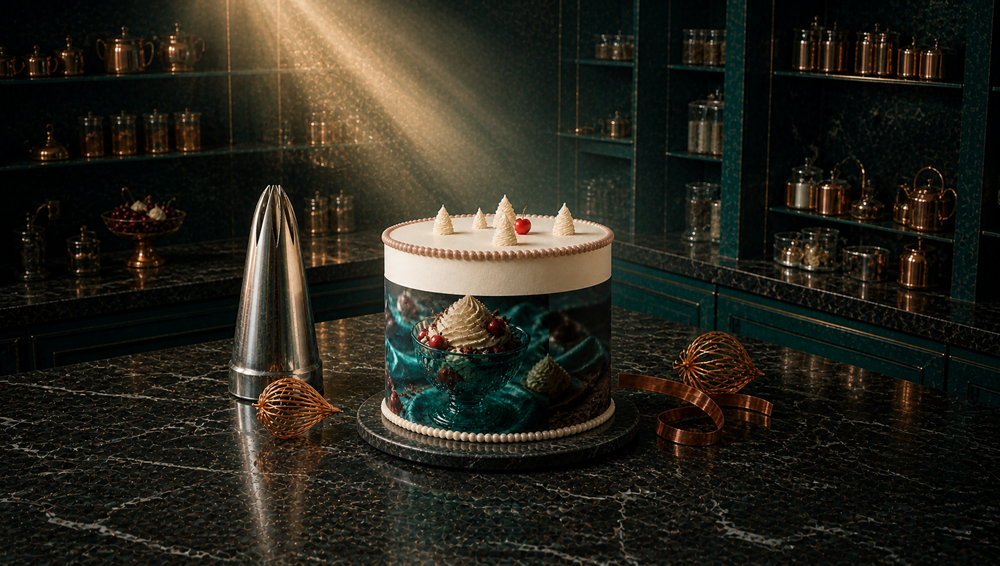
QA target · upload as last frame · KF13
First-frame upload keyframes/CST-KF12-product-oval.png
Last-frame upload keyframes/CST-KF13-product-photo-wrap.png
Accepted filename accepted/CST-A-012.mp4
Seed 270712
Positive prompt
Copy prompt
CST-A-013 · KF13 → KF14
Product Photo Wrap → Product Ivory Sheet
FLF → KF14
Storyboard start · KF13
→
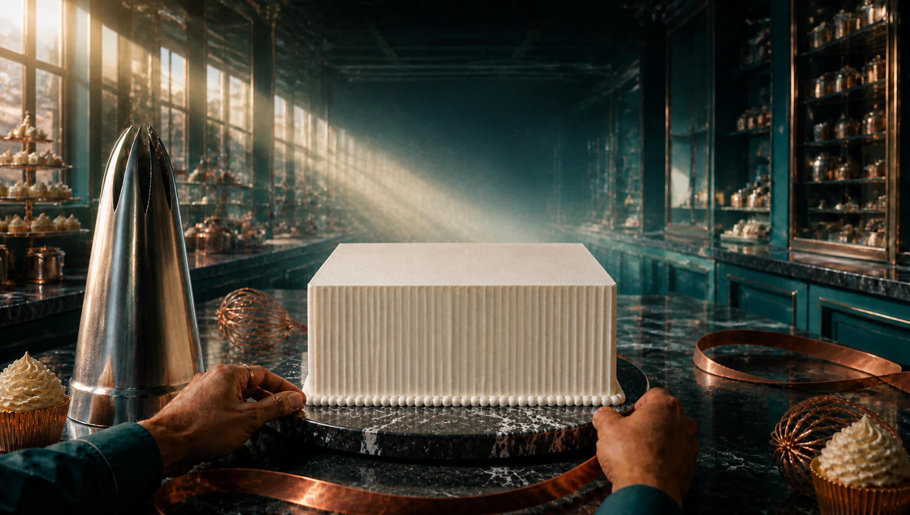
QA target · upload as last frame · KF14
First-frame upload keyframes/CST-KF13-product-photo-wrap.png
Last-frame upload keyframes/CST-KF14-product-ivory-sheet.png
Accepted filename accepted/CST-A-013.mp4
Seed 270712
Positive prompt
Copy prompt
CST-A-014 · KF14 → KF15
Product Ivory Sheet → Product Tiered
FLF → KF15
Storyboard start · KF14
→
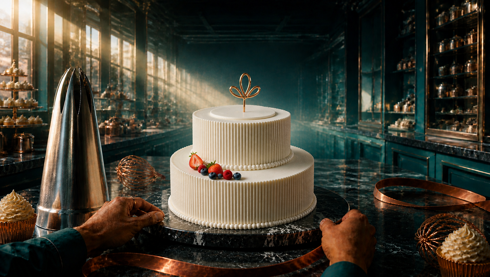
QA target · upload as last frame · KF15
First-frame upload keyframes/CST-KF14-product-ivory-sheet.png
Last-frame upload keyframes/CST-KF15-product-tiered.png
Accepted filename accepted/CST-A-014.mp4
Seed 270712
Positive prompt
Copy prompt
CST-A-015 · KF15 → KF16
Product Tiered → Product Vintage Round
FLF → KF16
Storyboard start · KF15
→
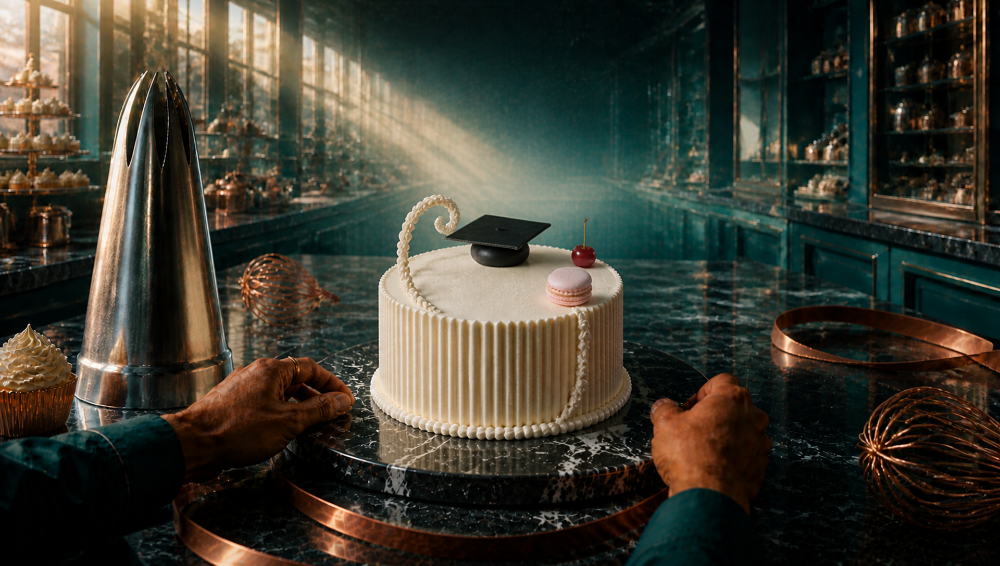
QA target · upload as last frame · KF16
First-frame upload keyframes/CST-KF15-product-tiered.png
Last-frame upload keyframes/CST-KF16-product-vintage-round.png
Accepted filename accepted/CST-A-015.mp4
Seed 270712
Positive prompt
Copy prompt
CST-A-016 · KF16 → KF17
Product Vintage Round → Nine Form Spiral
FLF → KF17
Storyboard start · KF16
→
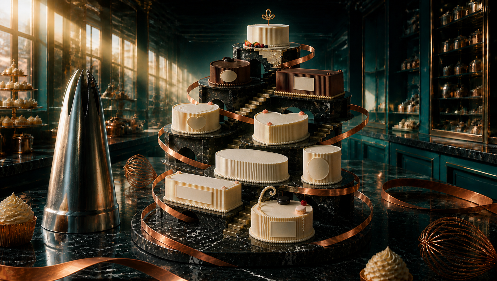
QA target · upload as last frame · KF17
First-frame upload keyframes/CST-KF16-product-vintage-round.png
Last-frame upload keyframes/CST-KF17-nine-form-spiral.png
Accepted filename accepted/CST-A-016.mp4
Seed 270712
Positive prompt
Copy prompt
CST-A-017 · KF17 → KF18
Nine Form Spiral → One Click Choice
FLF → KF18
Storyboard start · KF17
→
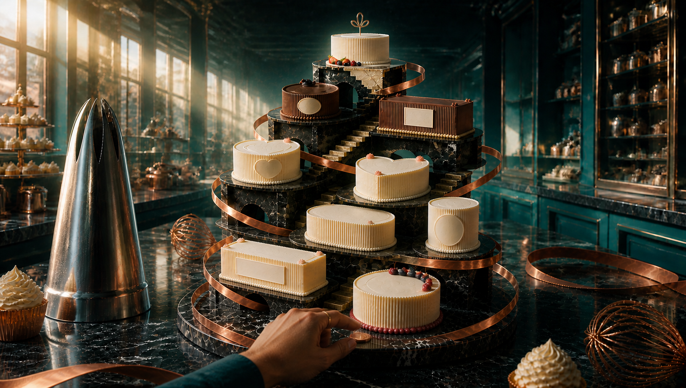
QA target · upload as last frame · KF18
First-frame upload keyframes/CST-KF17-nine-form-spiral.png
Last-frame upload keyframes/CST-KF18-one-click-choice.png
Accepted filename accepted/CST-A-017.mp4
Seed 270713
Positive prompt
Copy prompt
CST-A-018 · KF18 → KF19
One Click Choice → Anamorphic Surface Map
FLF → KF19
Storyboard start · KF18
→
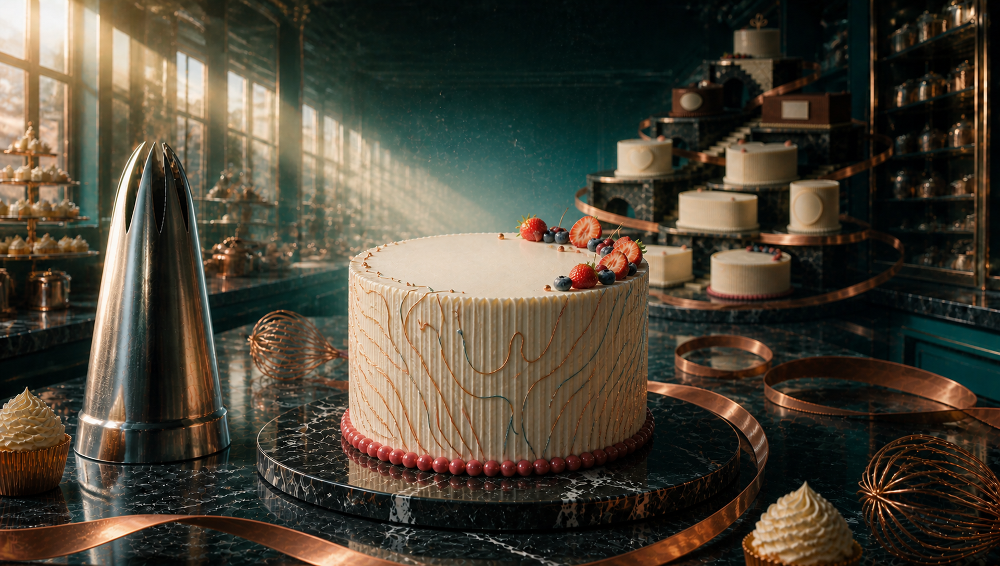
QA target · upload as last frame · KF19
First-frame upload keyframes/CST-KF18-one-click-choice.png
Last-frame upload keyframes/CST-KF19-anamorphic-surface-map.png
Accepted filename accepted/CST-A-018.mp4
Seed 270713
Positive prompt
Copy prompt
CST-A-019 · KF19 → KF20
Anamorphic Surface Map → Surface Hover
FLF → KF20
Storyboard start · KF19
→
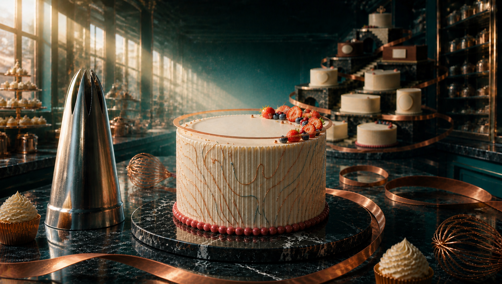
QA target · upload as last frame · KF20
First-frame upload keyframes/CST-KF19-anamorphic-surface-map.png
Last-frame upload keyframes/CST-KF20-surface-hover.png
Accepted filename accepted/CST-A-019.mp4
Seed 270713
Positive prompt
Copy prompt
CST-A-020 · KF20 → KF21
Surface Hover → Part Hover
FLF → KF21
Storyboard start · KF20
→
QA target · upload as last frame · KF21
First-frame upload keyframes/CST-KF20-surface-hover.png
Last-frame upload keyframes/CST-KF21-part-hover.png
Accepted filename accepted/CST-A-020.mp4
Seed 270714
Positive prompt
Copy prompt
CST-A-021 · KF21 → KF22
Part Hover → Part Placed
FLF → KF22
Storyboard start · KF21
→
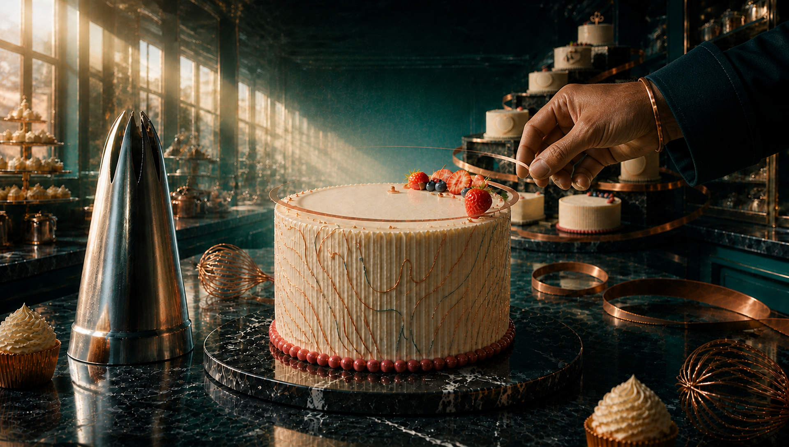
QA target · upload as last frame · KF22
First-frame upload keyframes/CST-KF21-part-hover.png
Last-frame upload keyframes/CST-KF22-part-placed.png
Accepted filename accepted/CST-A-021.mp4
Seed 270714
Positive prompt
Copy prompt
CST-A-022 · KF22 → KF23
Part Placed → Edible Wrap Unfurls
FLF → KF23
Storyboard start · KF22
→
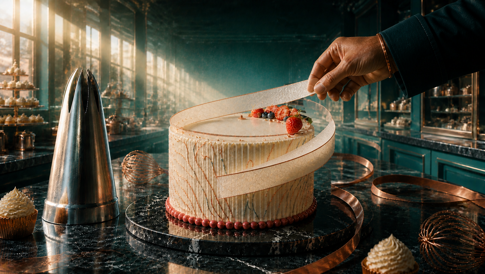
QA target · upload as last frame · KF23
First-frame upload keyframes/CST-KF22-part-placed.png
Last-frame upload keyframes/CST-KF23-edible-wrap-unfurls.png
Accepted filename accepted/CST-A-022.mp4
Seed 270714
Positive prompt
Copy prompt
CST-A-023 · KF23 → KF24
Edible Wrap Unfurls → Typeset Path Rises
FLF → KF24
Storyboard start · KF23
→
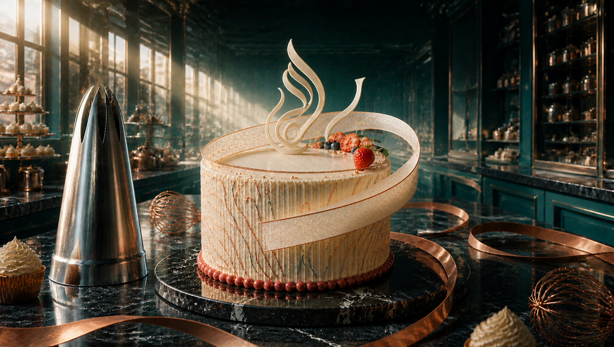
QA target · upload as last frame · KF24
First-frame upload keyframes/CST-KF23-edible-wrap-unfurls.png
Last-frame upload keyframes/CST-KF24-typeset-path-rises.png
Accepted filename accepted/CST-A-023.mp4
Seed 270714
Positive prompt
Copy prompt
CST-A-024 · KF24 → KF25
Typeset Path Rises → Cream Outline Monument
FLF → KF25
Storyboard start · KF24
→
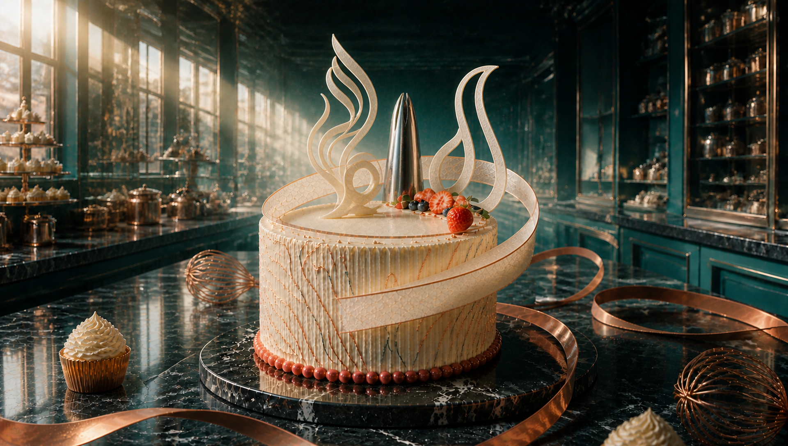
QA target · upload as last frame · KF25
First-frame upload keyframes/CST-KF24-typeset-path-rises.png
Last-frame upload keyframes/CST-KF25-cream-outline-monument.png
Accepted filename accepted/CST-A-024.mp4
Seed 270714
Positive prompt
Copy prompt
CST-A-025 · KF25 → KF26
Cream Outline Monument → Piping Tip Portal
FLF → KF26
Storyboard start · KF25
→
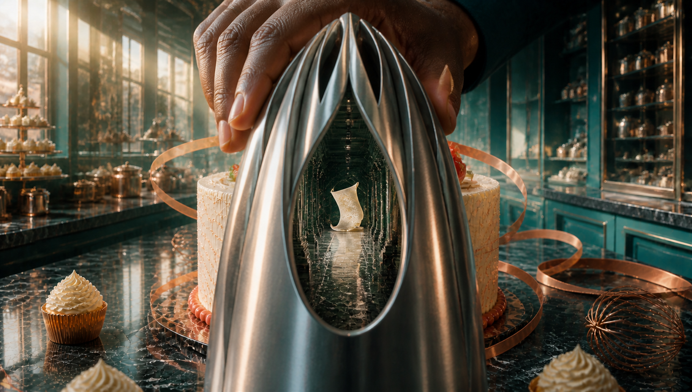
QA target · upload as last frame · KF26
First-frame upload keyframes/CST-KF25-cream-outline-monument.png
Last-frame upload keyframes/CST-KF26-piping-tip-portal.png
Accepted filename accepted/CST-A-025.mp4
Seed 270714
Positive prompt
Copy prompt
CST-A-026 · KF26 → KF27
Piping Tip Portal → Twenty Patch Field
FLF → KF27
Storyboard start · KF26
→
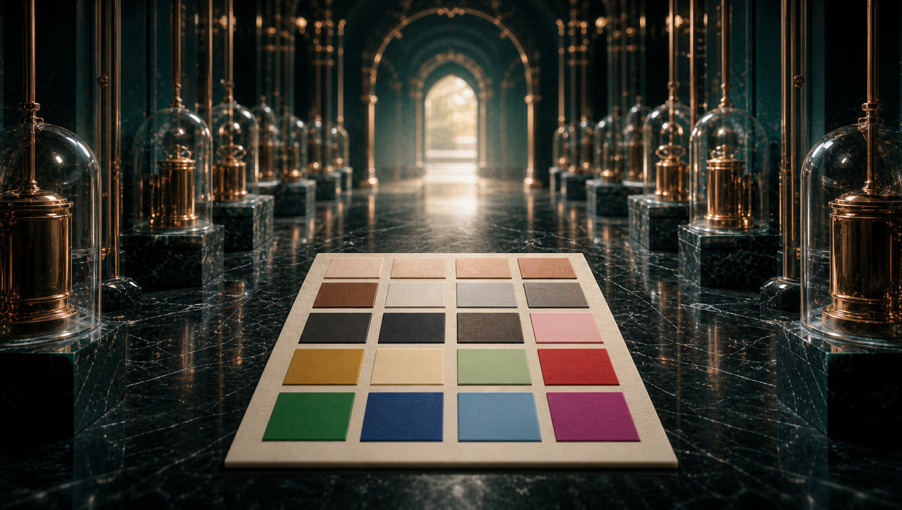
QA target · upload as last frame · KF27
First-frame upload keyframes/CST-KF26-piping-tip-portal.png
Last-frame upload keyframes/CST-KF27-twenty-patch-field.png
Accepted filename accepted/CST-A-026.mp4
Seed 270715
Positive prompt
Copy prompt
CST-A-027 · KF27 → KF28
Twenty Patch Field → Press Error Cast
FLF → KF28
Storyboard start · KF27
→
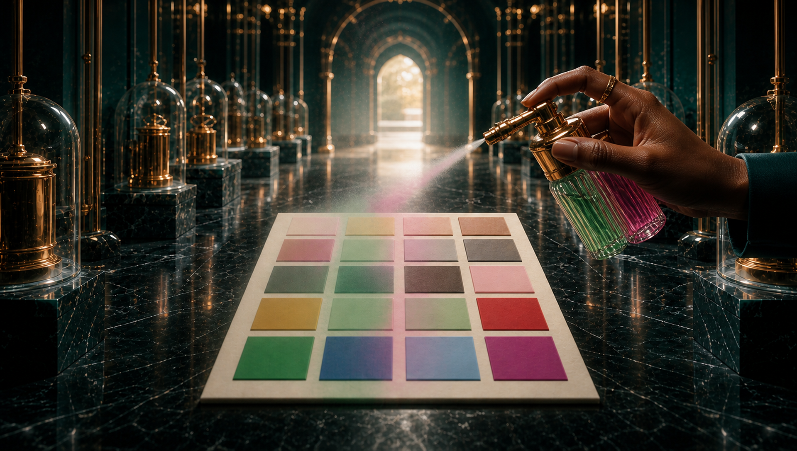
QA target · upload as last frame · KF28
First-frame upload keyframes/CST-KF27-twenty-patch-field.png
Last-frame upload keyframes/CST-KF28-press-error-cast.png
Accepted filename accepted/CST-A-027.mp4
Seed 270715
Positive prompt
Copy prompt
CST-A-028 · KF28 → KF29
Press Error Cast → Patch Scan
FLF → KF29
Storyboard start · KF28
→
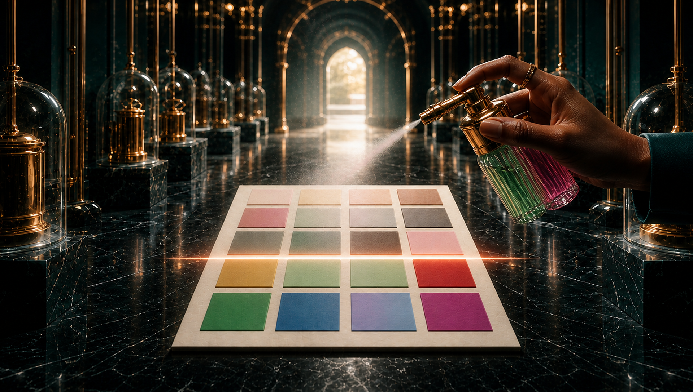
QA target · upload as last frame · KF29
First-frame upload keyframes/CST-KF28-press-error-cast.png
Last-frame upload keyframes/CST-KF29-patch-scan.png
Accepted filename accepted/CST-A-028.mp4
Seed 270715
Positive prompt
Copy prompt
CST-A-029 · KF29 → KF30
Patch Scan → Corrected Patches
FLF → KF30
Storyboard start · KF29
→
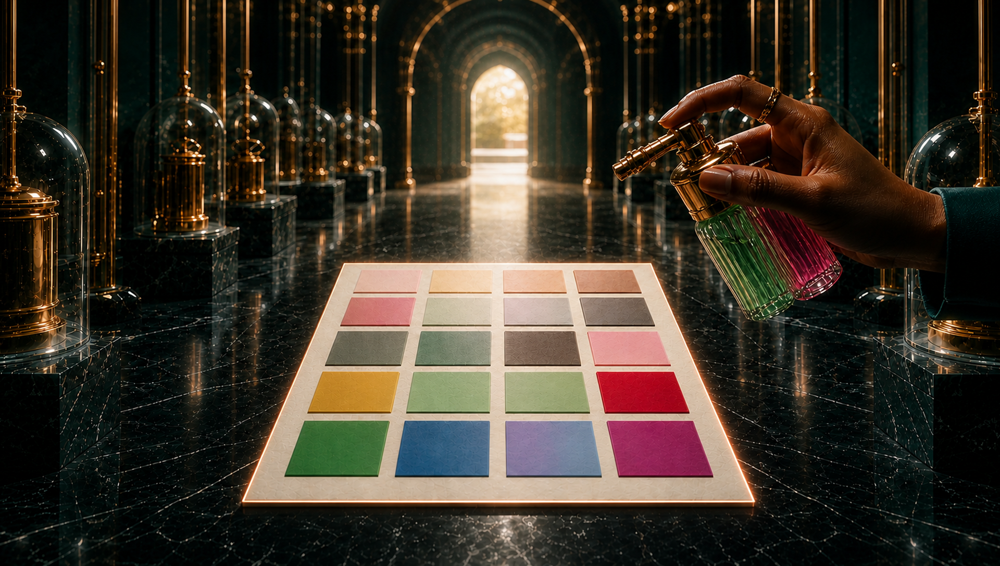
QA target · upload as last frame · KF30
First-frame upload keyframes/CST-KF29-patch-scan.png
Last-frame upload keyframes/CST-KF30-corrected-patches.png
Accepted filename accepted/CST-A-029.mp4
Seed 270715
Positive prompt
Copy prompt
CST-A-030 · KF30 → KF31
Corrected Patches → Calibrated Glaze Arch
FLF → KF31
Storyboard start · KF30
→
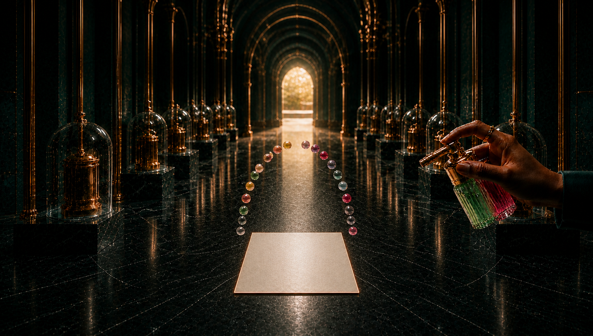
QA target · upload as last frame · KF31
First-frame upload keyframes/CST-KF30-corrected-patches.png
Last-frame upload keyframes/CST-KF31-calibrated-glaze-arch.png
Accepted filename accepted/CST-A-030.mp4
Seed 270715
Positive prompt
Copy prompt
CST-A-031 · KF31 → KF32
Calibrated Glaze Arch → Sheet Enters Press
FLF → KF32
Storyboard start · KF31
→
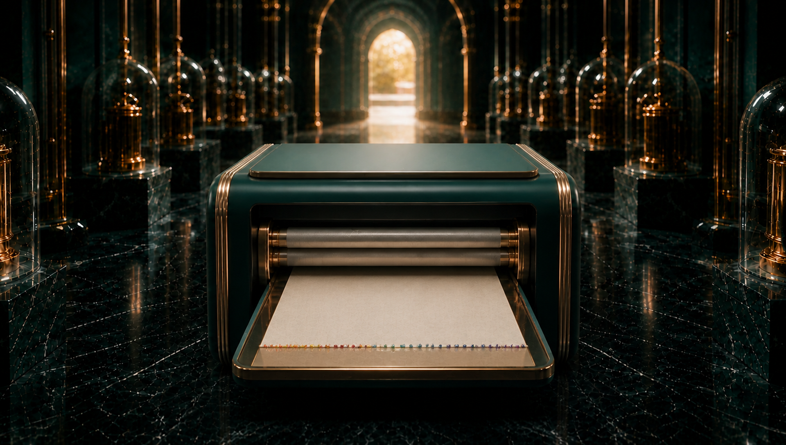
QA target · upload as last frame · KF32
First-frame upload keyframes/CST-KF31-calibrated-glaze-arch.png
Last-frame upload keyframes/CST-KF32-sheet-enters-press.png
Accepted filename accepted/CST-A-031.mp4
Seed 270715
Positive prompt
Copy prompt
CST-A-032 · KF32 → KF33
Sheet Enters Press → Sheet Exits Press
FLF → KF33
Storyboard start · KF32
→
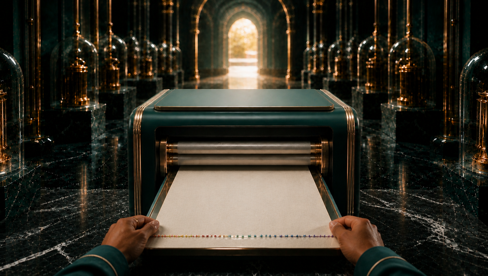
QA target · upload as last frame · KF33
First-frame upload keyframes/CST-KF32-sheet-enters-press.png
Last-frame upload keyframes/CST-KF33-sheet-exits-press.png
Accepted filename accepted/CST-A-032.mp4
Seed 270716
Positive prompt
Copy prompt
CST-A-033 · KF33 → KF34
Sheet Exits Press → Steel Rule Alignment
FLF → KF34
Storyboard start · KF33
→
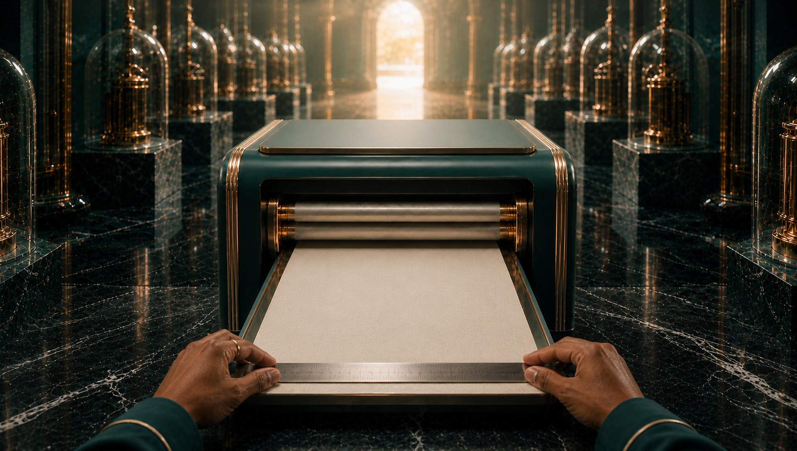
QA target · upload as last frame · KF34
First-frame upload keyframes/CST-KF33-sheet-exits-press.png
Last-frame upload keyframes/CST-KF34-steel-rule-alignment.png
Accepted filename accepted/CST-A-033.mp4
Seed 270716
Positive prompt
Copy prompt
CST-A-034 · KF34 → KF35
Steel Rule Alignment → One To One Bridge
FLF → KF35
Storyboard start · KF34
→
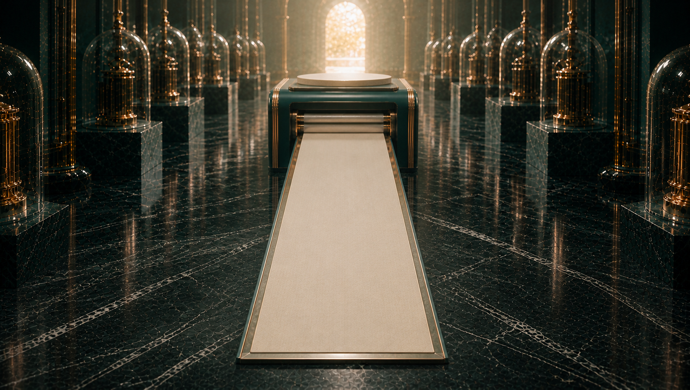
QA target · upload as last frame · KF35
First-frame upload keyframes/CST-KF34-steel-rule-alignment.png
Last-frame upload keyframes/CST-KF35-one-to-one-bridge.png
Accepted filename accepted/CST-A-034.mp4
Seed 270716
Positive prompt
Copy prompt
CST-A-035 · KF35 → KF36
One To One Bridge → Six Proof Facets
FLF → KF36
Storyboard start · KF35
→
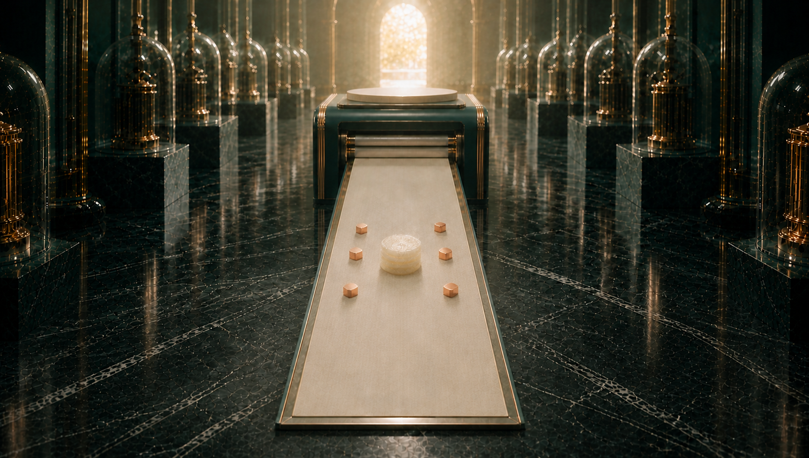
QA target · upload as last frame · KF36
First-frame upload keyframes/CST-KF35-one-to-one-bridge.png
Last-frame upload keyframes/CST-KF36-six-proof-facets.png
Accepted filename accepted/CST-A-035.mp4
Seed 270716
Positive prompt
Copy prompt
CST-A-036 · KF36 → KF37
Six Proof Facets → Revision Seal
FLF → KF37
Storyboard start · KF36
→
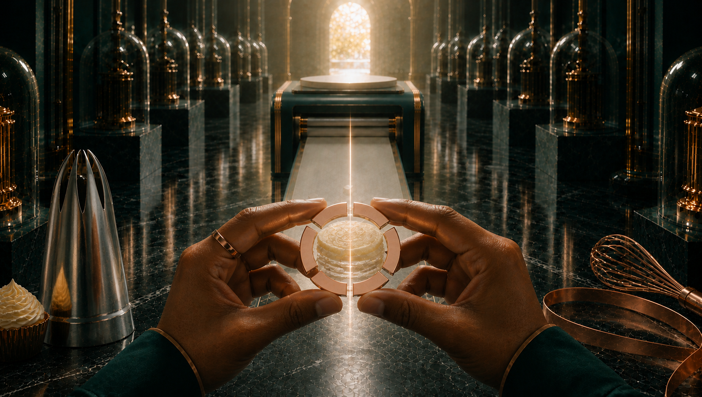
QA target · upload as last frame · KF37
First-frame upload keyframes/CST-KF36-six-proof-facets.png
Last-frame upload keyframes/CST-KF37-revision-seal.png
Accepted filename accepted/CST-A-036.mp4
Seed 270717
Positive prompt
Copy prompt
CST-A-037 · KF37 → KF38
Revision Seal → Changed Revision
FLF → KF38
Storyboard start · KF37
→
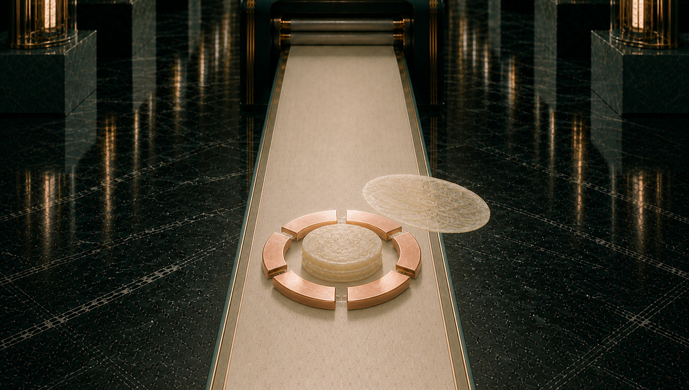
QA target · upload as last frame · KF38
First-frame upload keyframes/CST-KF37-revision-seal.png
Last-frame upload keyframes/CST-KF38-changed-revision.png
Accepted filename accepted/CST-A-037.mp4
Seed 270717
Positive prompt
Copy prompt
CST-A-038 · KF38 → KF39
Changed Revision → Stale Layer Rejected
FLF → KF39
Storyboard start · KF38
→
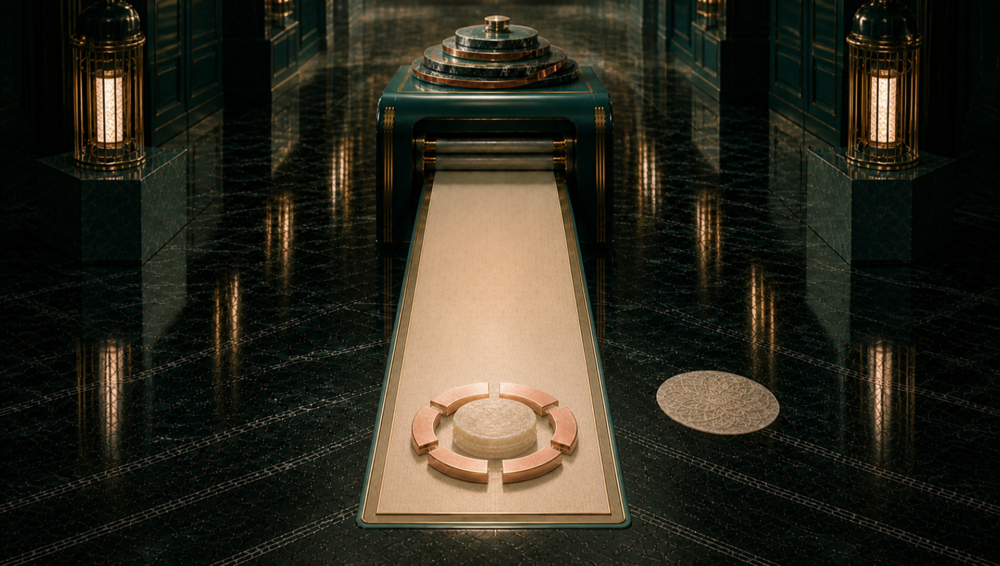
QA target · upload as last frame · KF39
First-frame upload keyframes/CST-KF38-changed-revision.png
Last-frame upload keyframes/CST-KF39-stale-layer-rejected.png
Accepted filename accepted/CST-A-038.mp4
Seed 270718
Positive prompt
Copy prompt
CST-A-039 · KF39 → KF40
Stale Layer Rejected → Twelve Rule Cage
FLF → KF40
Storyboard start · KF39
→
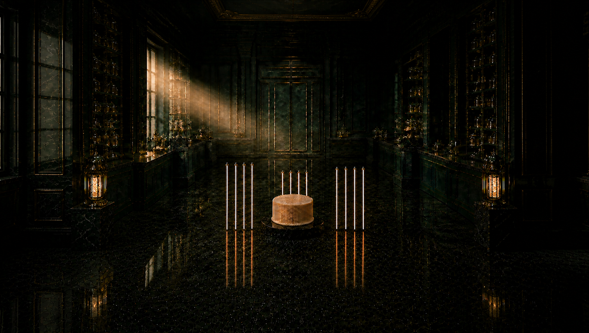
QA target · upload as last frame · KF40
First-frame upload keyframes/CST-KF39-stale-layer-rejected.png
Last-frame upload keyframes/CST-KF40-twelve-rule-cage.png
Accepted filename accepted/CST-A-039.mp4
Seed 270718
Positive prompt
Copy prompt
CST-A-040 · KF40 → KF41
Twelve Rule Cage → Nine Defects Revealed
FLF → KF41
Storyboard start · KF40
→
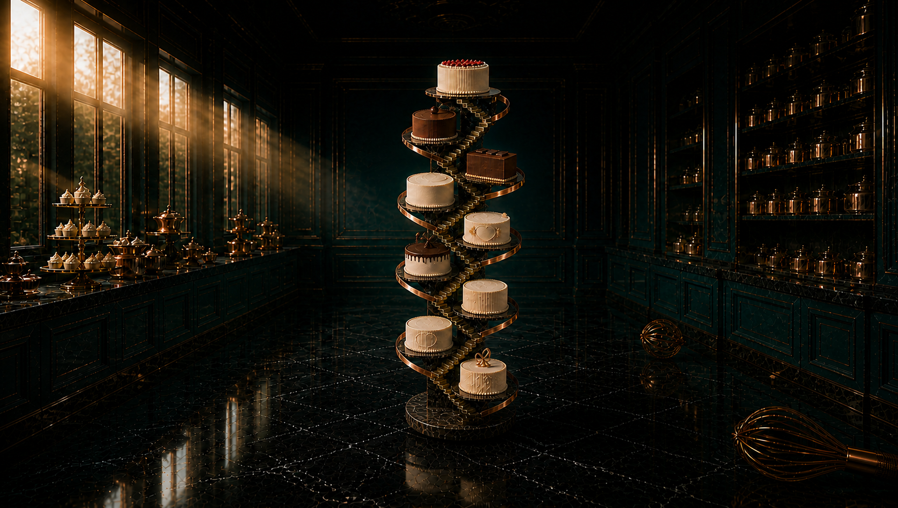
QA target · upload as last frame · KF41
First-frame upload keyframes/CST-KF40-twelve-rule-cage.png
Last-frame upload keyframes/CST-KF41-nine-defects-revealed.png
Accepted filename accepted/CST-A-040.mp4
Seed 270718
Positive prompt
Copy prompt
CST-A-041 · KF41 → KF42
Nine Defects Revealed → Defects Lift Away
FLF → KF42
Storyboard start · KF41
→
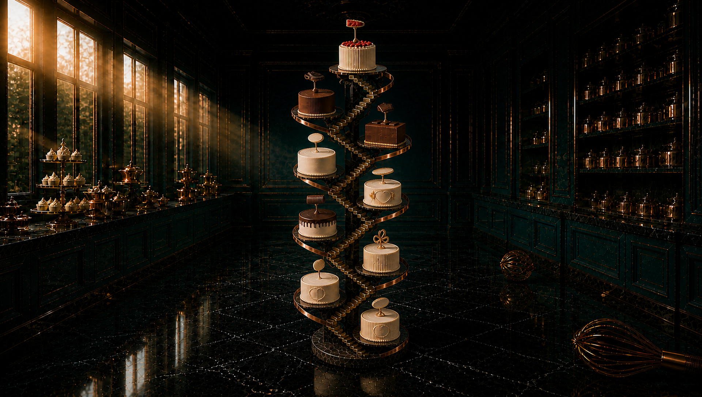
QA target · upload as last frame · KF42
First-frame upload keyframes/CST-KF41-nine-defects-revealed.png
Last-frame upload keyframes/CST-KF42-defects-lift-away.png
Accepted filename accepted/CST-A-041.mp4
Seed 270718
Positive prompt
Copy prompt
CST-A-042 · KF42 → KF43
Defects Lift Away → Nine Corrected Cakes
FLF → KF43
Storyboard start · KF42
→
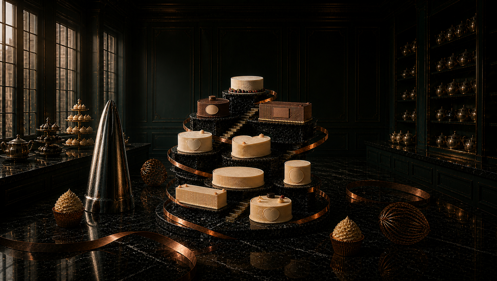
QA target · upload as last frame · KF43
First-frame upload keyframes/CST-KF42-defects-lift-away.png
Last-frame upload keyframes/CST-KF43-nine-corrected-cakes.png
Accepted filename accepted/CST-A-042.mp4
Seed 270718
Positive prompt
Copy prompt
CST-A-043 · KF43 → KF44
Nine Corrected Cakes → Cake Aperture
FLF → KF44
Storyboard start · KF43
→
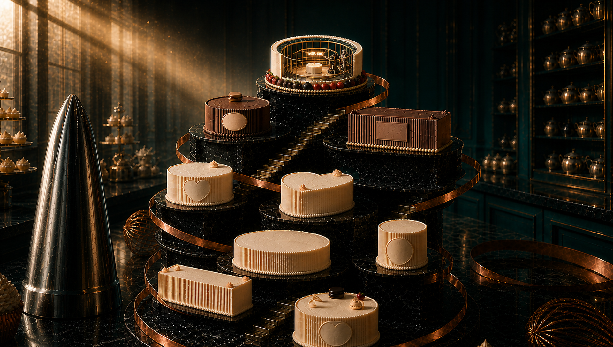
QA target · upload as last frame · KF44
First-frame upload keyframes/CST-KF43-nine-corrected-cakes.png
Last-frame upload keyframes/CST-KF44-cake-aperture.png
Accepted filename accepted/CST-A-043.mp4
Seed 270718
Positive prompt
Copy prompt
CST-A-044 · KF44 → KF45
Cake Aperture → Glaze Settles
FLF → KF45
Storyboard start · KF44
→
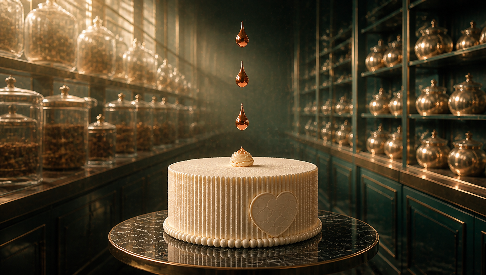
QA target · upload as last frame · KF45
First-frame upload keyframes/CST-KF44-cake-aperture.png
Last-frame upload keyframes/CST-KF45-glaze-settles.png
Accepted filename accepted/CST-A-044.mp4
Seed 270719
Positive prompt
Copy prompt
CST-A-045 · KF45 → KF46
Glaze Settles → Photos Peel Live
FLF → KF46
Storyboard start · KF45
→
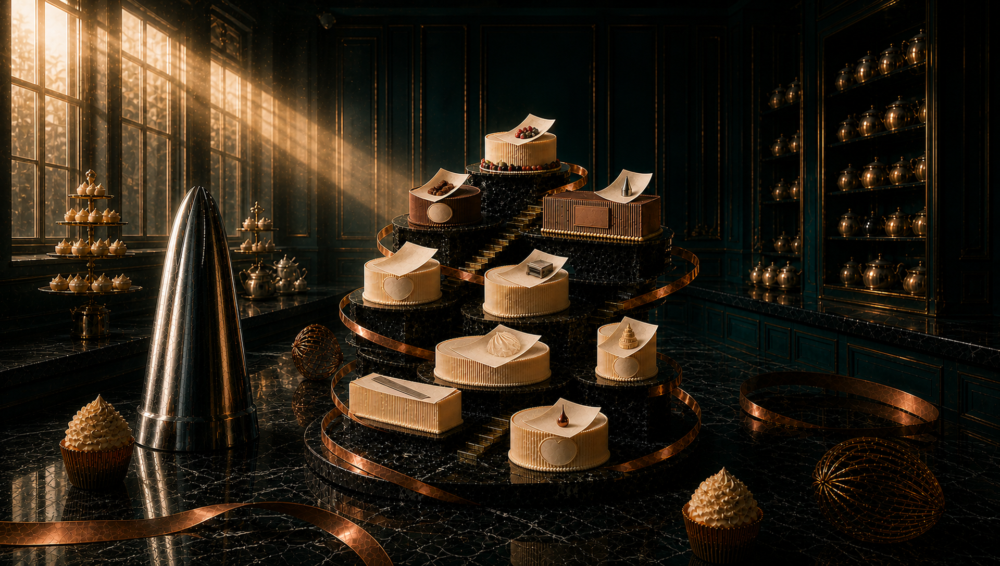
QA target · upload as last frame · KF46
First-frame upload keyframes/CST-KF45-glaze-settles.png
Last-frame upload keyframes/CST-KF46-photos-peel-live.png
Accepted filename accepted/CST-A-045.mp4
Seed 270719
Positive prompt
Copy prompt
CST-A-046 · KF46 → KF47
Photos Peel Live → Cream Paper Arch
FLF → KF47
Storyboard start · KF46
→
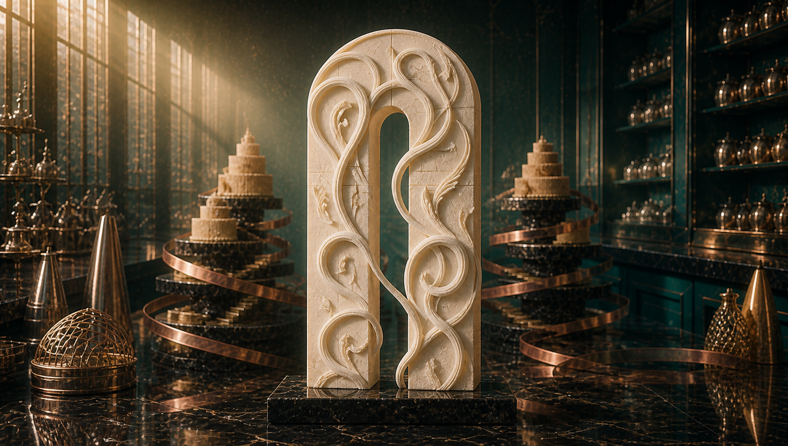
QA target · upload as last frame · KF47
First-frame upload keyframes/CST-KF46-photos-peel-live.png
Last-frame upload keyframes/CST-KF47-cream-paper-arch.png
Accepted filename accepted/CST-A-046.mp4
Seed 270719
Positive prompt
Copy prompt
CST-A-047 · KF47 → KF48
Cream Paper Arch → Print Room Aperture
FLF → KF48
Storyboard start · KF47
→
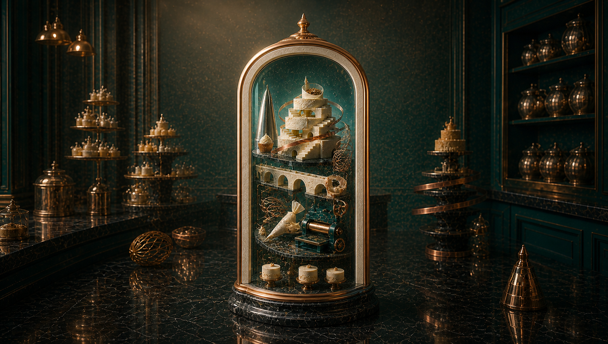
QA target · upload as last frame · KF48
First-frame upload keyframes/CST-KF47-cream-paper-arch.png
Last-frame upload keyframes/CST-KF48-print-room-aperture.png
Accepted filename accepted/CST-A-047.mp4
Seed 270719
Positive prompt
Copy prompt
CST-A-048 · KF48 → KF49
Print Room Aperture → World Folds To Sheet
FLF → KF49
Storyboard start · KF48
→
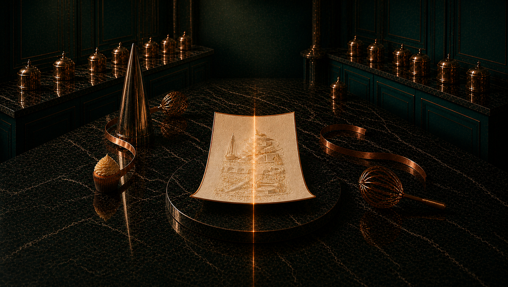
QA target · upload as last frame · KF49
First-frame upload keyframes/CST-KF48-print-room-aperture.png
Last-frame upload keyframes/CST-KF49-world-folds-to-sheet.png
Accepted filename accepted/CST-A-048.mp4
Seed 270719
Positive prompt
Copy prompt
CST-A-049 · KF49 → KF50
World Folds To Sheet → Loop Closure
FLF → KF50
Storyboard start · KF49
→
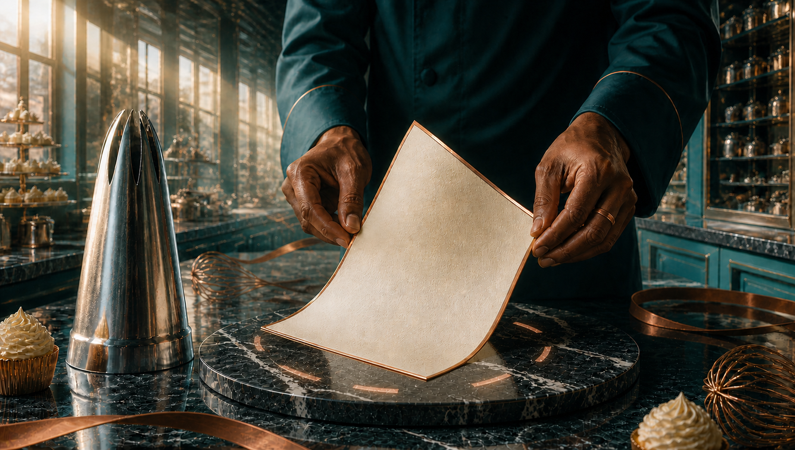
QA target · upload as last frame · KF50
First-frame upload keyframes/CST-KF49-world-folds-to-sheet.png
Last-frame upload keyframes/CST-KF50-loop-closure.png
Accepted filename accepted/CST-A-049.mp4
Seed 270711
Positive prompt
Copy prompt
CST-A-050 · KF50 → KF01
Loop Closure → Opening Sheet
FLF → KF01
Storyboard start · KF50
→
QA target · upload as last frame · KF01
First-frame upload keyframes/CST-KF50-loop-closure.png
Last-frame upload keyframes/CST-KF01-opening-sheet.png
Accepted filename accepted/CST-A-050.mp4
Seed 270711
Positive prompt
Copy prompt